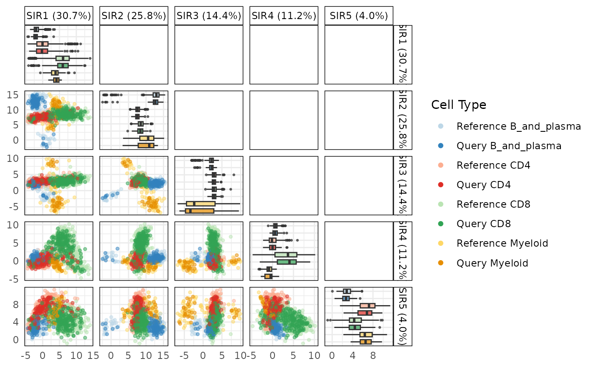
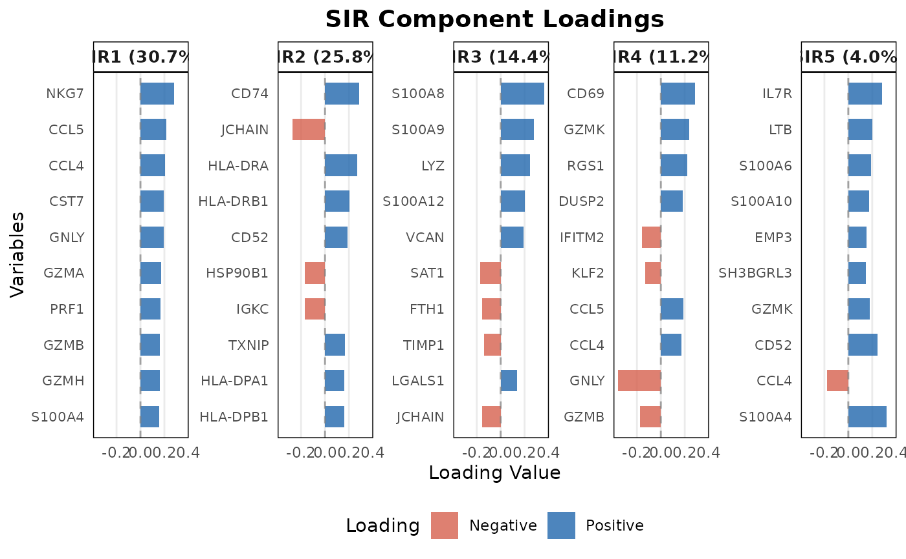

Calculate Sliced Inverse Regression (SIR) Space for Different Cell Types
Source:R/calculateSIRSpace.R, R/plot.calculateSIRSpaceObject.R
calculateSIRSpace.RdThis function calculates the SIR space projections for different cell types in the query and reference datasets.
This function plots the Sliced Inverse Regression (SIR) components for different cell types in query and reference datasets.
Usage
calculateSIRSpace(
query_data,
reference_data,
query_cell_type_col,
ref_cell_type_col,
cell_types = NULL,
multiple_cond_means = TRUE,
cumulative_variance_threshold = 0.7,
n_neighbor = 1,
assay_name = "logcounts",
max_cells_query = 5000,
max_cells_ref = 5000
)
# S3 method for class 'calculateSIRSpaceObject'
plot(
x,
plot_type = c("scores", "loadings"),
cell_types = NULL,
sir_subset = 1:5,
lower_facet = c("scatter", "contour", "ellipse", "blank"),
diagonal_facet = c("ridge", "density", "boxplot", "blank"),
upper_facet = c("blank", "scatter", "contour", "ellipse"),
n_top = 10,
max_cells_ref = NULL,
max_cells_query = NULL,
...
)Arguments
- query_data
A
SingleCellExperimentobject containing the numeric expression matrix for the query cells.- reference_data
A
SingleCellExperimentobject containing the numeric expression matrix for the reference cells.- query_cell_type_col
A character string specifying the column name in the
colDataofquery_datathat identifies the cell types.- ref_cell_type_col
A character string specifying the column name in the
colDataofreference_datathat identifies the cell types.- cell_types
A character vector specifying the cell types to include in the plot. If NULL, all cell types are included. Only used when plot_type = "scores".
- multiple_cond_means
Logical. Whether to compute conditional means for multiple conditions in the reference dataset. Default is TRUE.
- cumulative_variance_threshold
A numeric value specifying the cumulative variance threshold for selecting principal components. Default is 0.7.
- n_neighbor
A numeric value specifying the number of neighbors for computing the SIR space. Default is 1.
- assay_name
A character string specifying the name of the assay on which to perform computations. Default is "logcounts".
- max_cells_query
Maximum number of query cells to include in the plot. If NULL, all available query cells are plotted. Default is NULL. Only used when plot_type = "scores".
- max_cells_ref
Maximum number of reference cells to include in the plot. If NULL, all available reference cells are plotted. Default is NULL. Only used when plot_type = "scores".
- x
An object of class
calculateSIRSpaceObjectcontaining SIR projections.- plot_type
A character string specifying the type of plot. Either "scores" (default) for SIR projections or "loadings" for variable loadings.
- sir_subset
A numeric vector specifying which SIR components to include in the plot. Default is 1:5.
- lower_facet
Type of plot to use for the lower panels. Either "scatter" (default), "contour", "ellipse", or "blank". Only used when plot_type = "scores".
- diagonal_facet
Type of plot to use for the diagonal panels. Either "ridge" (default), "density", "boxplot" or "blank". Only used when plot_type = "scores".
- upper_facet
Type of plot to use for the upper panels. Either "blank" (default), "scatter", "contour", or "ellipse". Only used when plot_type = "scores".
- n_top
A numeric value specifying the number of n_top variables (by absolute loading value) to display. Default is 10 Only used when plot_type = "loadings".
- ...
Additional arguments passed to the plotting function.
Value
A list containing the SIR projections, rotation matrix, and percentage of variance explained for the given cell types.
A ggmatrix object representing a pairs plot of specified SIR components for the given cell types and datasets when plot_type = "scores", or a ggplot object showing loadings when plot_type = "loadings".
Details
The function projects the query dataset onto the SIR space of the reference dataset based on shared cell types. It computes conditional means for the reference dataset, extracts the SVD components, and performs the projection of both the query and reference data. It uses the `projectSIR` function to perform the actual projection and allows the user to specify particular cell types for analysis.
This function visualizes the SIR projections for specified cell types, providing a pairs plot of the SIR components. It offers various visualization options for different facets of the plot including scatter plots, contours, ellipses, and density plots. When plot_type is "loadings", it creates horizontal bar plots showing the n_top contributing variables for each SIR component.
Author
Anthony Christidis, anthony-alexander_christidis@hms.harvard.edu
Examples
# Load data
data("reference_data")
data("query_data")
# Compute important variables for all pairwise cell comparisons
sir_output <- calculateSIRSpace(reference_data = reference_data,
query_data = query_data,
query_cell_type_col = "expert_annotation",
ref_cell_type_col = "expert_annotation",
multiple_cond_means = TRUE,
cumulative_variance_threshold = 0.9,
n_neighbor = 1)
# Generate plots SIR projections
plot(sir_output,
sir_subset = 1:5,
cell_types = c("CD4", "CD8", "B_and_plasma", "Myeloid"),
lower_facet = "scatter",
diagonal_facet = "boxplot",
upper_facet = "blank")

# Plot top loadings
plot(sir_output,
sir_subset = 1:5,
plot_type = "loadings",
n_top = 10)
